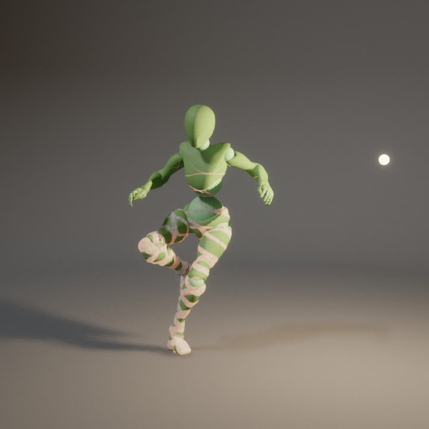
Winding
Two sets of bands go on feet first and widen. At 30% they reach the hips; the figure still dances at full pace.
A figure dances while silk winds round it, feet first, until a felted shell holds it still. A small lamp circles it and the shell glows from inside, with the body a shadow in it. Ask for a new one and the figure breaks out in a new colour, scattering the shell as flakes. Here is how the silk is put on a moving body, how light gets through it, what the floss, webs and wisps are, and how the shell comes apart.
See it live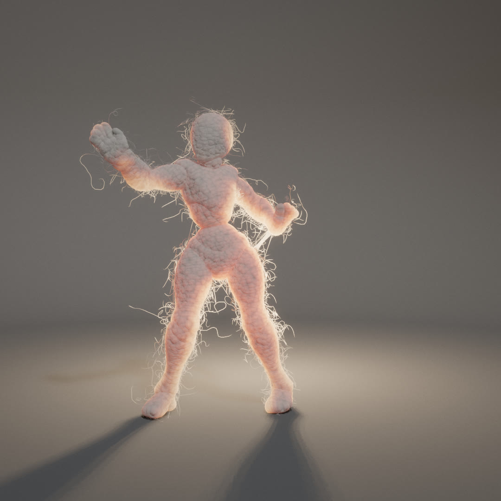
A silkworm spins its cocoon round itself while it moves, and it moves less as the wall closes in. The sketch follows the same arc with a person: a figure dancing on a studio cyc is wound in silk over ten seconds, slows as the bands close, and stands nearly still in a finished shell. A small lamp circles at about chest height, so every twelve seconds or so the cocoon passes from lit felt to a glowing lantern with a body inside it. A finished cocoon holds for three and a half seconds and hatches (or at once, on R), and the figure comes out in another colour and another dance, to be wound again.
Nothing here is simulated in the physical sense. The silk is a second skin with a pattern cut into it, the light through it is read off two depth maps, and the flakes follow spirals written down in closed form. All of it is driven by a few numbers per frame: how much silk is on (wrapped, 0 to 1), how far the hatching has got (hatch, 0 to 1), and the lamp's position.

Two sets of bands go on feet first and widen. At 30% they reach the hips; the figure still dances at full pace.
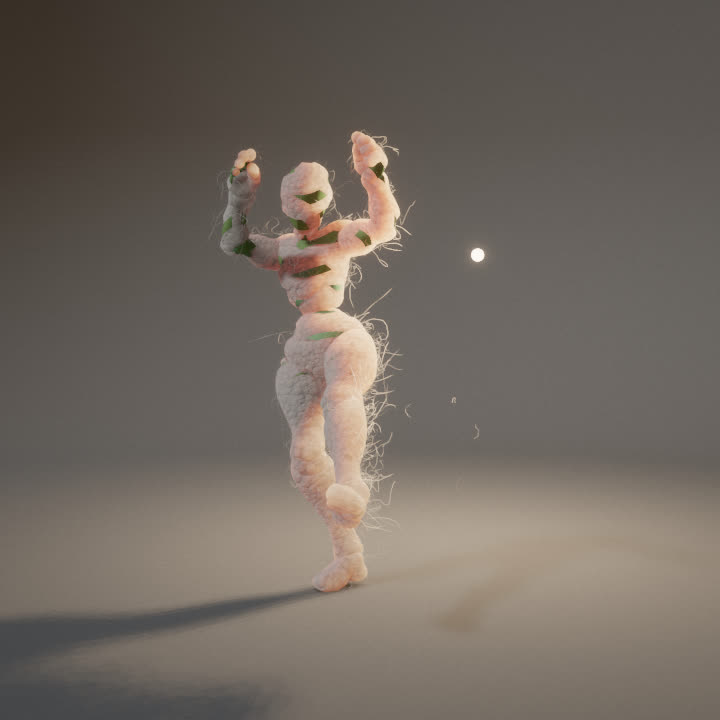
Past 60% the silk starts to hold the body back. The head is the last place the bands close, at 87%.
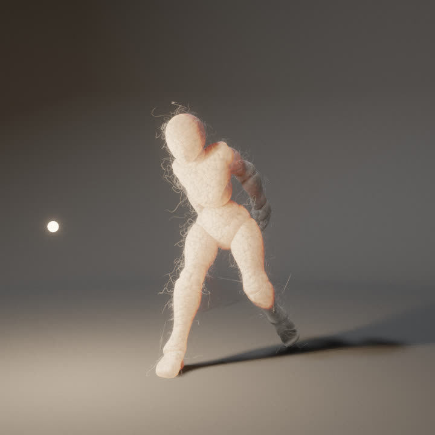
The lamp lights the felt directly, wrapping a little past the terminator, red furthest.
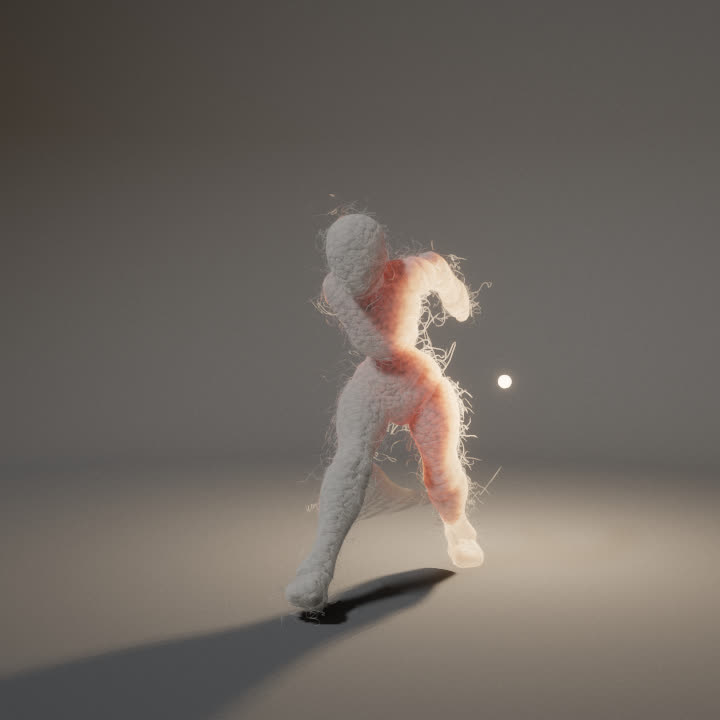
What crosses only silk comes out amber; what crosses the body comes out a dull red, so the limbs read as shadows.
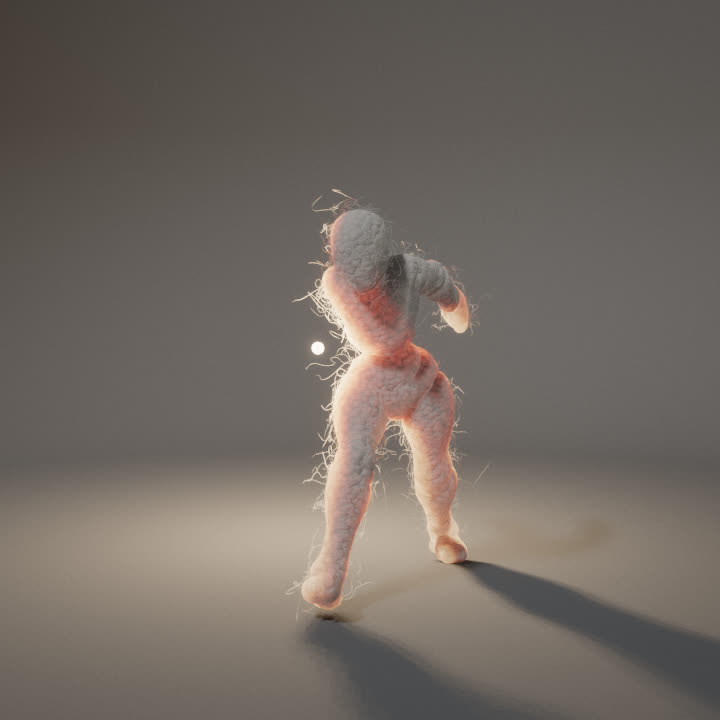
For the first 22% of the hatch nothing tears: the shell swells in patches, four pushes, each quicker and harder.
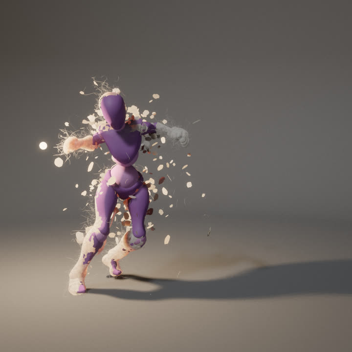
The split opens at the breastbone, runs over the head and works round to the back and out along the limbs.
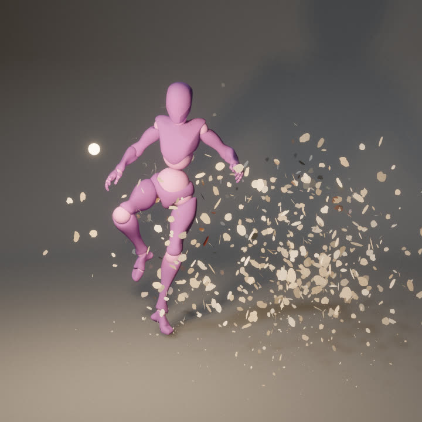
Each chip winds outward on its own spiral, sinking, turning over and shrinking away before the floor; the ones a limb meets bounce off it.
The figure is three.js's Xbot example model: a Mixamo character of two skinned meshes, the body and its joints (15,901 and 12,473 vertices, 49,112 triangles together), on one 67-bone skin. Its file brings a walk, a run and two poses, of which sneak_pose is used. Eight more motions are dances retargeted to its skeleton offline (the samba from three's Michelle example): samba, salsa, swing, house, hip hop, wave, belly and capoeira, 254 to 382 frames each.
Those eight are not glTF files. Each is a small JSON (frame count, bone names) and a raw Float32Array: the frame times, then the hips' position track, then one quaternion track per bone, 65 of them. At 274 frames that is 274 × (1 + 3 + 65 × 4) floats, 289 kB for the samba, read straight into VectorKeyframeTrack and QuaternionKeyframeTrack with no parsing beyond a slice. Eleven motions are offered: the ten clips, plus "sneak", which is the walk with a pose laid over it. The pose is made additive and cut down to its last frame (frames 2–3 at 30 fps), then eased in and out at 5 per second, so changing between walk and sneak bends the same gait rather than restarting it. A randomize that would follow a gait (walk, run, sneak) with another gait picks a dance instead, so a cocoon never opens on a figure that just walks on.
Changing motion cross-fades over half a second. Three's cross-fade can also warp, matching the two clips' speeds through the fade so the feet stay in step. That is right between a one-second walk and a run, and badly wrong between a one-second walk and an eighteen-second dance, which it would play at nineteen times its speed for the length of the fade. So the warp is used only when the two durations are within a factor of two.
The shared PipelineMaterial has no skinning. It does have a displace() hook that runs in every variant (colour, prepass, shadow), so the skinning is written there by hand, using three's own bone texture and bindMatrix uniforms, which three uploads for any material drawn on a SkinnedMesh:
The pipeline's prepass writes a velocity buffer, which its temporally accumulated AO and GI reproject through. It finds the previous position by running displace() a second time with pipelinePrevPose set. Fed the current bones both times, a dancing body would have no velocity at all and its AO would smear behind every move. So before the mixer advances, the figure copies the bone matrices of the pose just drawn into a texture of the same layout (20 × 20 texels for 67 bones), and the prev-pose run reads that instead. While paused the two are the same and the velocity is zero.
The silk is the body's own geometry drawn a second time: a new SkinnedMesh on the same BufferGeometry, bound to the same skeleton. It is skinned exactly like the body and then pushed out along the normal, so it fits in every pose with no cloth simulation and no collisions. Two meshes, body and joints, get one each.
Pushing out along the model's own normals would tear it at every seam, where vertices at one place carry different normals (the UV and hard-edge splits). So each vertex also gets aSmooth: the sum of the normals of every vertex at the same place, rounded to 0.1 mm, normalised. Vertices that share a place then move together.
How far out is uThick × lift. The panel's thickness (0.5 to 5 cm, 2 cm by default) is scaled by 0.25 + 0.75 × wrapped, so the first turns lie on the skin and the wall builds as more goes on. lift runs from 0.08 at a band's edge to 1 a third of the way in, so each band comes down to the body at its sides: a closed strip lying on it, not a sheet held off it that can be seen under.
Where the silk is comes from the rest pose, so the pattern stays put on the moving body. Each point gets two turn counts, from its height y, its angle round the upright axis θ (in turns) and its distance from that axis r. The r term makes the bands spiral along outstretched arms as well as round the trunk.
The trunk as a cylinder of radius 15 cm, cut down the back and laid flat (front in the middle, height up). The first set of bands climbs nine turns per metre, the second set six turns per metre the other way and twice round. Both widen with coverAt, which is 1.6 × cover at the feet and 0.6 less at the top of the head, so the head closes last: at a cover of 0.87, the value the page calls "closed".
Close up, a cocoon is felt: a mat of tiny bumps. Each is drawn as a dome over the nearest of a scatter of points, one point per cell, searched over the 27 cells round the sample (a Worley lookup). The search returns the offset to the nearest point as well as its distance, and for a dome 1 − d² that offset is the slope, so the bump's normal costs nothing more than the lookup. Two scales are layered: 45 cells per metre for the bumps (about 2 cm), and 100 per metre for a grain on them, tilting the normal by 0.45 and 0.25 of their offsets.
The lookups are made in the rest pose, so the relief stays on the body, and the offsets are turned to the world by the bones' own rotation (three axes passed down as varyings). Before the lookup the point is bent by 1.4 cm of noise so the cells are not visibly round. The albedo darkens to 74% between domes and 92% between grains, carries a thread along the first set of bands (seven stripes per turn) and dims to 80% at a band's edge, where the silk is thin.
In the shadow and depth variants all of this is skipped: they only need to know whether the silk is there, and the felt is two 27-cell searches per pixel, in two shadow passes a frame.
A patch about 9 cm across, shaded only from the slopes the cell search returns: the coarse domes tilt the normal by 0.45 of their offset, the fine ones by the grain amount (0.25 in the sketch). The albedo uses the same domes, darker in the creases between them.
The silk also scatters the studio's key light. Past the key's terminator, where a hard surface would go dark, a band of light that went in nearby comes back out (through, from N·L of −0.7 up to 0.55), and a rim at grazing angles is stronger when the eye looks toward the light. The material turns on the pipeline's soft terminator and a sheen lobe of 0.6 at roughness 0.6, and AO gets the multi-bounce brightening for white materials, so the hollows between arm and body fill with light bounced inside them rather than going grey.
The silk goes on at a constant rate: ten seconds from bare to finished, on the wall clock, so it takes the same time at any frame rate (only a stall longer than half a second is cut short). It stops while the page is paused.
The animation's time step is multiplied by a pace. It is 1 until the silk is 60% on, then falls with the square of how far it has got toward closed, down to 0.03 at 87%:
Over the ten seconds of winding: silk on (the straight ramp), the coverage it gives at the feet, the waist and the top of the head, and the pace the clip plays at. The feet are fully covered at 62% of the way, the head only at 100%; the pace has all but stopped by the time the head closes.
The lamp is a 3 cm sphere on a circle of 1.1 m round the figure, at 1.05 m rising and falling 35 cm, once round every 12.6 seconds at the default orbit. It is not one of the pipeline's lights: every material that should see it adds it to its emissive term itself, with a warm colour (#ffd9a8 × 90) and a falloff of 1 / (1 + 0.6 r²). As the lamp comes up the pipeline's exposure comes down by 75%, so the studio steps back and what the lamp sends through the silk is what is seen.
What the lamp needs to know at any point is how much of the figure its light crossed to get there. Each frame the scene is drawn twice from the lamp, with a 110° perspective camera looking at the figure's chest, into two 512 × 512 float targets, using the materials' own shadow variants (they write depth as colour):
uLampDepth: body and silk, everything that casts a shadow. Where the lamp's light first meets the figure.uLampBody: only the meshes marked userData.body. Whether the body itself stood in the way.A point's distance from the lamp, minus the depth the lamp saw at it, is how far the light went inside the figure. It is averaged over 12 taps on a golden-angle disc of 1.4% of the map (about 7 texels), which softens it and thins it toward an outline as scattering would, and the axial depth difference is scaled by r / w to be measured along the ray. The same 12 taps in the body map say what share of that light met the body.
A horizontal slice at chest height: the silk ring (drawn thick), the body inside, the lamp outside. Each point on the ring is coloured by what the formulas give it. On the lamp's side it is lit directly, wrapping past the terminator by 0.55, 0.3 and 0.15 in red, green and blue. On the far side it gets what is left after crossing the cocoon: amber through silk alone, a dull red where the body was in the way.
The direct term has its own softening: the wrap is per channel, so past the terminator red carries on furthest, as light that went in nearby comes back out. It also follows the felt's bent normal, so the domes catch the lamp. The floss uses the same crossing test with steeper coefficients (9, 20, 38 per metre) and is lit as fibres: brightest square to the light, and with a strong forward lobe, so hairs against the lamp blaze. The body under the silk sees the lamp only where nothing crossed (a smoothstep from 2 to 6 cm), and the flakes are lit from either face.
The cyc behind the figure gets the lamp too, and the figure's shadow in it. That is a share of taps rather than a thickness: 16 taps on a disc of 2% of the map, each blocked if the lamp saw something more than 5 cm nearer. The wall is metres away, where any thickness would saturate at once and show the depth map's texels as steps; the share of a disc gives a soft edge instead.
A cocoon's outline is fuzzy: loose floss stands off it. That fuzz is real geometry, built once per cocoon from a seeded generator, so the panel can thicken or thin the same one. Each hair is a three-sided tube that tapers to nothing at its ends, rooted at a point spread over the skin by area (a running total of the triangle areas, binary-searched for a random share of it).
| kind | count at floss 1 | segments | reach | width | trails by |
|---|---|---|---|---|---|
| nap | 2,500 + 9,000 × floss | 3 | 0.4–2.4 cm | 0.7–1.4 mm | ¼ s² |
| frizz, free end (55%) | 400 + 2,600 × floss | 5–28 | 1–9 cm | 1–2.4 mm | s1.5 |
| frizz, loop (45%) | 0.4–4.4 cm | ½ sin πs |
A hair walks over the skin as it rises: each step (3–9 mm for the nap, 6–18 mm for the frizz) turns by a curl that drifts, with a 6% chance of a sharp kink. A free hair rises by reach · s0.7 and droops by 0.3 reach toward its end; a loop rises and lands again, reach · sin(πs). Every vertex carries the four bone weights of its root's nearest corner, so the whole hair is skinned with it, and is pushed out by the silk's thickness so it grows from the silk, not the body. A hair appears once the silk at its root's height has passed its own lateness (0.35 to 0.95), so the fuzz grows in after the bands, not with them.
At the default floss of 0.6 that is about 7,900 nap hairs and 2,000 frizz, some 160,000 vertices. They are blended and kept out of the prepass and both shadow maps: hair this fine would only be noise in any of them. Medium quality builds 60% of them and low 35%, and dragging the slider rebuilds once it rests for 150 ms rather than on every step.
Longer hairs trail and swing. Every bone has a point that follows it on a spring (stiffness 90, damping 7, stepped at no more than 1/30 s), and how far that point is behind its bone, clamped to 7 cm, goes to the GPU as one texel per bone. A hair's vertices are carried by that lag, blended over their four bones, times a share that grows along the hair: all of it at a free end, a quarter at most for the nap, the middle of a loop. The springs run on real time, not the animation's: a closing cocoon slows the dance to 3%, and on the animation's clock the hairs would freeze mid-swing. On real time they settle onto the still body in about a second. The wisps and chips in the air go by the same clock.
The bone (solid) moves along a figure eight; its follower (hollow) is pulled toward it at 90 per second² and damped at 7, so it lags on the way and swings past when the bone turns. The hairs' tips are carried by the gap, free ends fully and loops by their middle. Without the 7 cm clamp a fast spin flings them far off the body.
When two parts of a wound body come close (a hand to a hip, a knee to a knee), silk sticks them together; as they part it stretches into a sheet of filaments, necks and tears. To find those moments, 300 places are picked on the skin, evenly through its vertex list, each with its nearest neighbour more than 2 cm away at rest. Each frame those 300 are skinned on the CPU, and 100 of them are checked against all the others, round-robin. A web is made between two places that are within 14 cm of each other now but were more than 20 cm apart at rest (so not two points of one forearm), both wound, at most four new webs a frame and 40 at once.
A web is a ribbon of nine steps whose two long edges run between the pair and between their neighbours, so it is a sheet with a width. Its length when it was made is its rest length. If the two ends come closer it hangs slack, its middle dropping by ½ √(L² − d²); if they part it necks, its width at the middle cut by 0.2 + 0.6 · min(1, d / 25 cm), and it thins. Past 40 cm, or once either end is no longer wound, it tears and fades. In the shader it is mostly separate filaments with a little between them, from a beating sine across it.
Closer than it was made, a web sags; further, it necks and fades toward 60% of its opacity, and at 40 cm it is gone.
A place on the wound skin moving faster than 1.6 m/s, as seen (its distance moved over the real frame time), throws off a wisp now and then: a fixed curl of nine points a few centimetres long, given half the place's velocity, slowed by the air (e−2.5 t), sinking at 0.2 m/s², wandering and turning, gone in 1.2–2.4 s. Up to 60 are in the air at once and at most two are born a frame. Each one is also a rustle in the sound, outside a hatch.
A finished cocoon (at least 87% on) hatches 3.5 s after it closes, or at once when randomized; the hatch takes nine seconds. Its first 22% is the strain: the figure, all but still, pushes at the shell. The silk swells by up to 5 cm in noise patches, in four pushes, each quicker and harder than the last, s · sin²(4.5π s²) over the strain share s. Nothing tears and no wisps fly. Then the animation breaks into its new motion at 1.8 times its pace, settling back to 1 over 30% of the hatch, while the shell comes apart.
The shell is divided into patches, a Voronoi cell of nine per metre in the rest pose. Each patch has its moment, worked out once on the CPU for every vertex of the silk, every hair and every flake, so nothing is searched for in the shaders:
So the split opens at the breastbone, runs up over the head and down, works round to the back and out along the limbs. When a patch's moment comes, the silk there goes from a scatter of holes in 0.3 s (fine noise below a rising threshold), the hairs rooted in it shrink away, the webs fade, and its chips are let go.
The trunk unrolled as before, front in the middle, split into patches nine to the metre, darker the later they go. Past the slider's moment they are gone. Nothing goes in the first 22%; the last patches (the back of the legs and the far side) go at about 70%.
The chips are 900 small quads, placed over the skin by area (or most would come off the hands and feet, where the mesh is finest), each with its patch's moment plus up to 1.2% of jitter. Released, a chip's place on the skin becomes a position on a spiral round where the hips stood when the hatch began: an angle, a distance out and a height. It eases out to its own distance (0.35 to 1.45 m), goes round at 1.2–2.8 / (0.6 + distance) radians a second, so slower further out, and sinks at 12 to 42 cm/s after a first lift off the body. It bobs, turns over round two axes of its own, and shrinks to nothing at the end of its 3 to 6 seconds, or sooner near the floor. The shape is a ragged disc cut out of the quad by noise, felt on both faces and yellowed inside. Chips are solid and cast the key light's shadow.
Seen from above, with the release order of a real hatch: front first, then round to the back. Each chip winds outward at its own rate, slower the further out, and shrinks away; colour shows height, paler higher.
A hole in a shell that stands off the skin would show the gap under it, hollow. So in the 0.4 s before its patch breaks, the silk there sinks onto the body, and the shell round every hole slopes down to the skin, as a band's edge does.
At the end of the hatch the cocoon starts over: no silk, new fuzz, and the figure in the colour it took on in the cocoon. That colour changes the moment the cocoon closes over the head, out of sight, so the figure never comes out the colour it went in. It is one of eight hues an eighth of a turn apart, always at least two steps (90°) round from the last, with alternate steps a little lighter, so consecutive figures are clearly different. Its new motion and look were drawn by the randomize that started the hatch, and wait for it to end, so nothing visible changes under a breaking shell.
Two things have to stay out of the body: the chips, which otherwise drift straight through a swinging arm, and the lamp, whose circle would sometimes pass through a hand. Neither needs the skin itself. The body is sixteen capsules between bones: the trunk in two (hips to mid-spine, mid-spine to neck, 13 cm), the neck and the head (6 and 10 cm), and on each side the upper arm, forearm and hand (5.5, 4.5, 4.5 cm), thigh, shin and foot (7.5, 5.5, 5 cm). Every sampled point of the skin lies within 8 cm of one, in the walk and in the capoeira. Each frame their ends are read off the bones, and how fast each end moved, in real time.
A chip a quarter of a second out of the shell (so not the ones still leaving it) that finds itself inside a capsule is put back on its surface, 1.5 cm out. Its velocity relative to the limb there loses what pointed into it and bounces back 40% of that, is damped to 70%, and is added to the limb's own velocity: a kick bats the chips away, an arm swept through them carries them. That knock is added to the chip's spiral position every step and fades in the air (e−2.5 t); the spiral simply continues from where the chip has got to, with its distance out raised if it was knocked further, so nothing pulls it back. Halfway through a capoeira hatch, 131 of the 865 chips in the air were riding a knock.
The lamp keeps its circle but steps round the body. Where the circle passes within 18 cm of a capsule, the point it would be at is pushed out to 18 cm, and the lamp eases toward that offset at a rate of 8 per second, so it glides round a hand instead of jumping. A last push holds it at least 10 cm off whatever the easing has not caught up with. Over 25 s of capoeira it came no closer than 9 cm to any capsule.
The dances turn: left alone, the samba drifts round until the figure has its back to the camera. So after three seconds without a drag, a scroll or a touch, the camera takes over, easing in over three more. It goes back to the opening framing: 4.5 m out, 12° to the side of the figure's front and 4.5° above level, looking at its chest. The front is the direction square to the line from the right hip and shoulder to the left ones, smoothed over three seconds so a spin does not drag the camera round with it. The camera turns toward it at a rate of 0.4 per second but never faster than 20° a second, and sways there: ±11° and ±3° round the figure on slow cycles of 27 and 10 seconds, and ±3° up and down over 37. Any touch hands it back at once; it stops while paused, and stays off for recordings, which can turn it back on.
Wherever it is moved, by hand or by itself, the camera is kept inside the cyc. In distance from the axis and height, the cyc is a floor out to 4.2 m and then a cove of radius 2.8 m curving up into the wall. The camera is held at least 25 cm above the floor and 25 cm inside the cove and the wall, under 6 m, and no further than 6 m from what it looks at, which itself is kept within the studio. So it cannot go under the floor or out past the backdrop's edge.
Each look is a studio (wall, background, exposure, fill and key) and a silk colour: Studio's neutral grey and white silk, Raw silk's dark umber and honey-coloured silk, Amber's deep brown and apricot silk, Nocturne's blue-black and cool silk. The studios are all baked in the background once the page is up, so a change never waits for one. A change of look blends everything it lights with over two seconds, from where it is: wall, backdrop, exposure, silk colour, the studio's spherical-harmonic fill and its key light. Only the reflection map swaps, at the halfway point; on surfaces as rough as felt and the cyc the two hardly differ. The blend runs on the wall clock, so it shows even while paused.
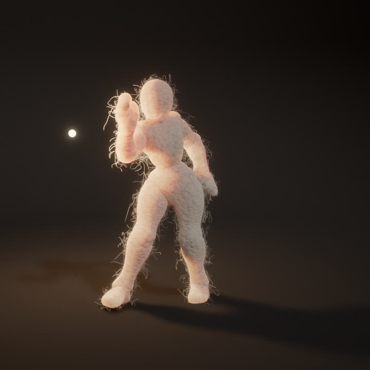
Dark umber studio, silk #e8d6be.
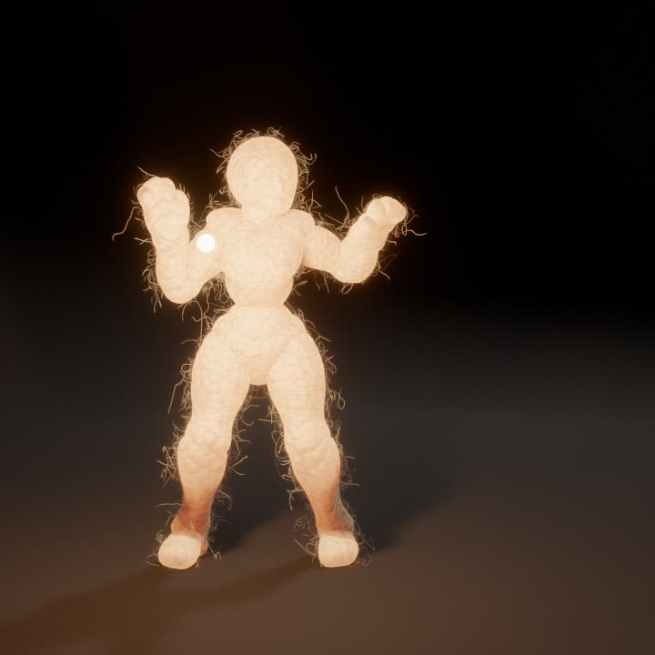
Deep brown studio, silk #f2c894.
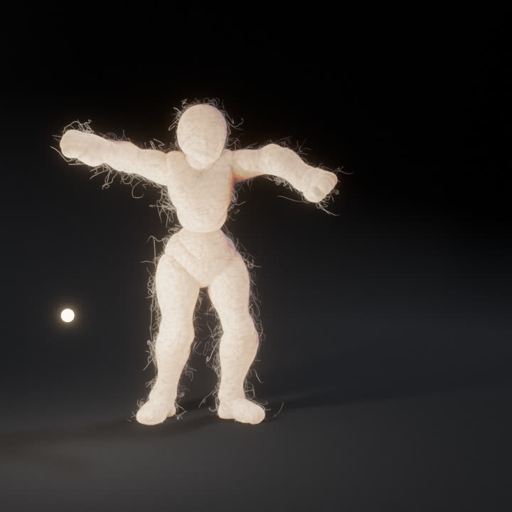
Blue-black studio, silk #d8dce6.
Left alone, the page keeps going. The bands close at 8.7 s, the figure all but still from then on; 3.5 s later the cocoon hatches by itself, for nine seconds. So a full cycle is about twenty-one seconds, every part of it moving. The usual auto change, counting ten seconds while the cocoon is ready, is still there, but the hold comes first. Turning auto change off keeps a finished cocoon for as long as it is wanted.
Every randomize draws, right after the panel, the seed of the next fuzz (and, when a page loads with a seed, the figure's colour), whether or not this randomize starts a hatch, so the seeded sequence never depends on how long the page has been open. Loading a url with ?seed= replays that randomize before anything is built, and starts with the cocoon it hatched. The effects drawn every frame (wisps, chips, their shapes, the colour picked as a cocoon closes) use the unseeded generator so they never shift it.
The sound is recorded foley, all CC0 from freesound.org, cut, band-limited and levelled into 26 short files (380 kB). Every file is levelled to the same loudness (the rustles to −23 dB RMS, the rip a little louder), so the gains in the code are the mix, and a gentle compressor (−20 dB threshold, 3:1) holds overlapping sounds together.
For the video the same calls are scheduled on an offline audio context, timed by the recording's virtual clock, and the soundtrack is rendered once the frames are done: nothing is heard while it records.
The figure is drawn more often than it looks. Every frame the skinned meshes go through the pipeline's shadow map, the two lamp depth maps, the prepass and the main pass; the floss and ribbons only through the main pass.
| pass | what | size |
|---|---|---|
| key shadow | body, joints, silk ×2, chips | pipeline shadow map |
| lamp depth | body, joints, silk ×2 | 512 × 512, R32F |
| lamp body | body, joints | 512 × 512, R32F |
| prepass | body, joints, silk ×2, chips, cyc | screen, normals + velocity + depth |
| main | all, floss blended (~160k vertices at floss 0.6) | screen, MSAA |
| CPU | 300 skinned samples, 100 × 300 distance checks, 16 capsules, up to 900 chips against them | per frame |